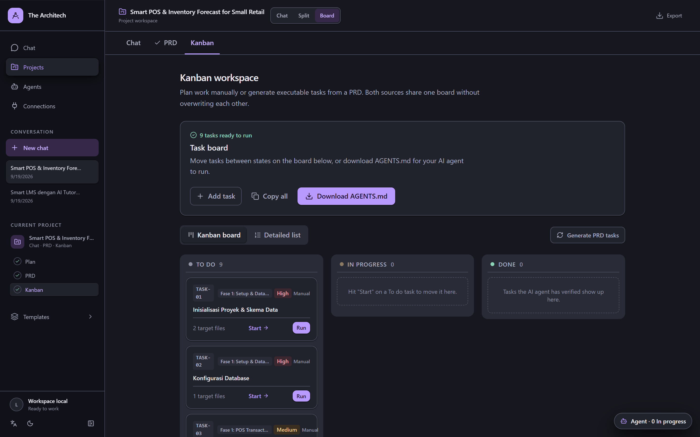
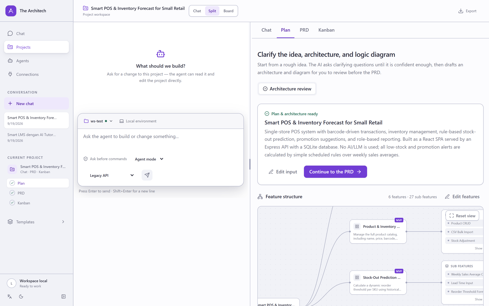

The Architech interviews you about the idea until the gaps are closed, drafts the architecture,
then splits it into atomic tasks — each with target files, dependencies, and verification steps.
Download AGENTS.md and hand it to Claude Code, Codex, or Cursor.
Node 22.14+ · no database to provision · no account, no telemetry

The gap
Coding agents are good at writing code. They are much worse at deciding what to build, in what order, and how anyone would know it worked. That part is still yours — and a paragraph of intent does not carry it.
It picks an architecture you would not have picked. You find out after the third file.
It writes task 7 before task 3 — and task 3 was the schema everything else depends on.
Nothing says how you would know it worked. So the agent declares success and you go read the diff anyway.
You re-explain the same context tomorrow, because it lived in a chat window that is now gone.
How it works
Three steps, each one editable before it feeds the next. You are reviewing a document, not babysitting a chat.
Describe the idea in a sentence. The agent asks focused follow-ups until it stops guessing, then drafts:
The approved plan becomes a seven-point requirements document you can actually edit:
The PRD splits into atomic coding tasks. Every card carries what an agent needs to execute it:
AGENTS.md
Models
The Architech ships with no model and no API key. You point it at whatever you already pay for — or at something running on your own machine.
Bind a different connection to each stage. A strong model drafts the architecture; a cheap, fast one fills in the task board. The app does not care which is which.
Anthropic Messages and OpenAI-compatible, with presets for local routers, Ollama, LM Studio, OpenRouter, Anthropic, and Gemini. Codex, Claude Code, and Antigravity are detected if you have them installed.
Register external tools over stdio or Streamable HTTP. They are discovered lazily and
namespaced as mcp__server__tool, isolated from the built-ins. A slow or dead
server does not stall the turn — the UI just reports it.
Keys saved through the UI live server-side in data/architech.db. Prefer them out
of the database? Name an environment variable on the connection instead and keep the value
in .env.
Boundaries
File and shell access are real capabilities, so they are gated deliberately rather than enabled by default.
The agent gets no file tools at all until you select a working folder. Paths are then
resolved to their real location and checked against that folder, so ../, an
absolute path, and a symlink pointing outside are all refused.
Off by default, and only available once a folder is set. Every command is shown to you and waits for approval before it runs. Refusing tells the model the command did not run, so it can suggest something else.
Sessions, connections, and MCP definitions live in a SQLite file on disk. There is no
account, no sync, and no telemetry. Deleting data/ deletes everything.
They are read from saved project state, never from the request, so a client cannot widen its own access mid-conversation.
One thing we will not pretend about.
There is no denylist of dangerous commands. Pattern-matching shell strings does not hold up, and shipping one would imply a protection that is not there. If you enable the shell and approve a command, it runs. Read the approvals.
Install
Storage uses the built-in node:sqlite, so there is no database to install. Running
the installer again keeps your existing data/ and .env.
LINUX / MACOS
curl -fsSLO https://raw.githubusercontent.com/CharisChakim/the-architech/main/install.sh bash install.sh the-architech
WINDOWS POWERSHELL
Invoke-WebRequest https://raw.githubusercontent.com/CharisChakim/the-architech/main/install.ps1 -OutFile install.ps1 powershell -ExecutionPolicy Bypass -File .\install.ps1
FROM A CHECKOUT
npm install
npm run dev # http://localhost:3000